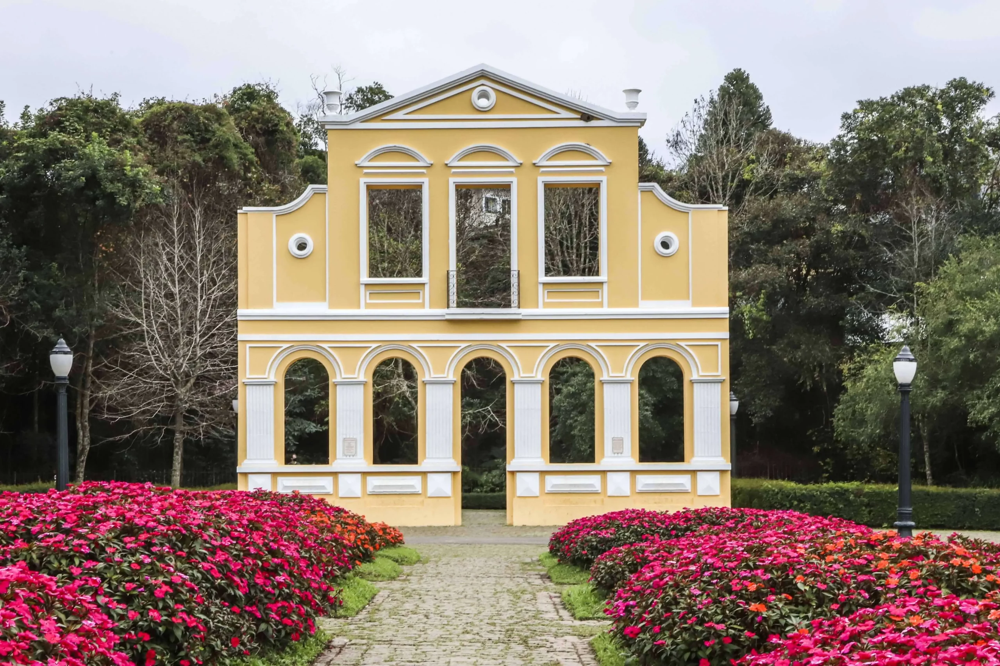

Vamos ver tudo sobre um dos monumentos historicos de Curitiba: Bosque Alemão
O Bosque Alemão é um dos principais monumentos históricos e turísticos de Curitiba. Inaugurado em 1996, foi criado para homenagear os imigrantes alemães que contribuíram para o desenvolvimento da cidade. Localizado no bairro Vista Alegre, o bosque reúne áreas de mata nativa, trilhas, mirantes e atrações culturais, como a Casa Encantada, o Caminho de João e Maria e o Oratório Bach. Além de preservar a história e a cultura da imigração alemã, o local promove lazer, educação ambiental e contato com a natureza, sendo um importante patrimônio cultural de Curitiba.

História do Bosque Alemão
O Bosque Alemão foi inaugurado em 1996, em Curitiba, para homenagear os imigrantes alemães que chegaram à cidade a partir do século XIX e contribuíram para seu desenvolvimento econômico, cultural e social. Construído em uma área de mata nativa no bairro Vista Alegre, o bosque preserva elementos da cultura alemã por meio de construções inspiradas na arquitetura típica, como o Portal da Casa Mila e o Oratório Bach, além de atrações como o Caminho de João e Maria e a Casa Encantada. Atualmente, o Bosque Alemão é um importante espaço de preservação histórica, cultural e ambiental, recebendo visitantes para atividades de lazer, turismo e educação.
A cultura do Bosque Alemão para os Curitibanos
O Bosque Alemão tem grande importância para a cultura curitibana por preservar e valorizar a história dos imigrantes alemães que ajudaram no desenvolvimento de Curitiba. O local mantém vivas as tradições dessa comunidade por meio de sua arquitetura, monumentos e atrações culturais, como o Caminho de João e Maria e o Oratório Bach. Além disso, oferece um espaço para lazer, educação ambiental e contato com a natureza, fortalecendo a identidade cultural da cidade e incentivando a preservação de seu patrimônio histórico.